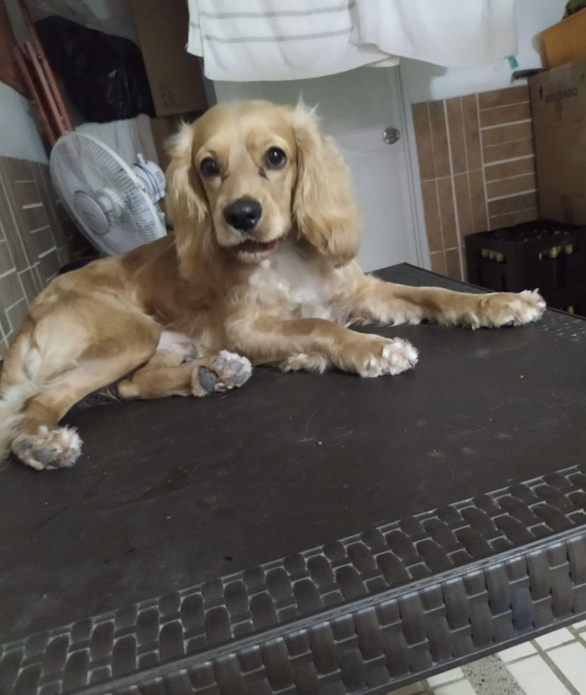
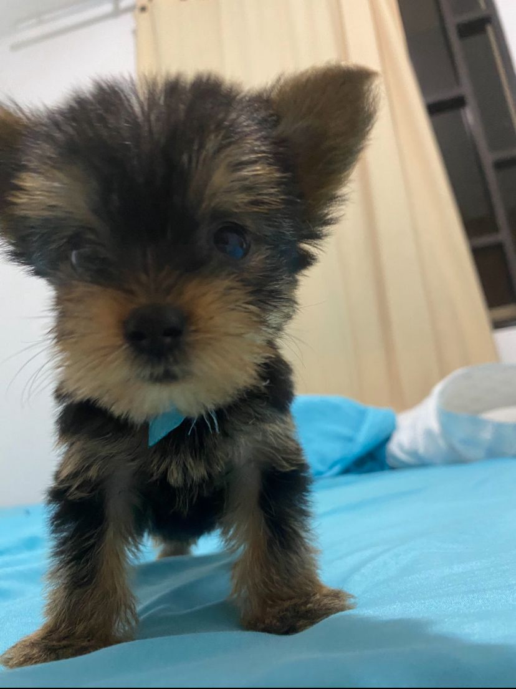
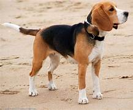

Esta es la raza de perro que más me gusta. Una de mis mascotas fue de esta raza, mi perrito Waldi. Ya murió, pero siempre lo recordaré y extrañaré.

Esta es la raza de perro que más me gusta. Una de mis mascotas fue de esta raza, mi perrito Waldi. Ya murió, pero siempre lo recordaré y extrañaré.

Él se llama Willy y es una de mis mascotas actuales y es un perro muy juguetón y amigable.

Este es Lucas, otro de mis mascotas actuales. Es un gato muy cariñoso y juguetón.